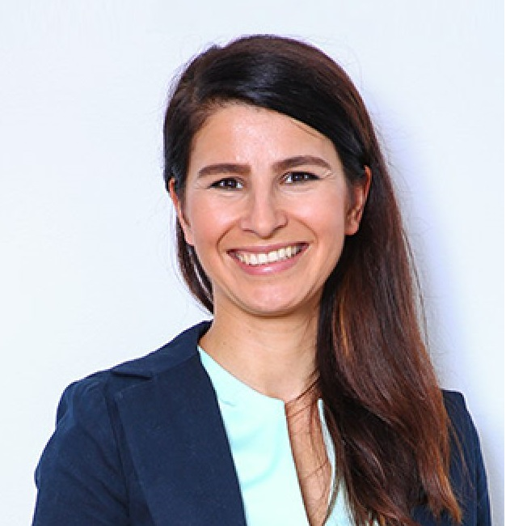

Te invităm să îți iei o ceașcă cu cafea și să te lași inspirat de ultimele noutăți din comunitatea de lideri care conduc prin puterea exemplului.
Considerăm că leadershipul este o disciplină pe care o poți studia și practica sistematic. Îți propunem o serie de evenimente de leadership, pentru o perspectivă nouă și inspirație în activitatea ta de zi cu zi. au loc online și te poți înscrie la cel mai potrivit cu planurile tale de dezvoltare.
John Mark Williams talks leadership & Management with Henry Mintzberg
Event by The Institute of Leadership & Management
23 Noiembrie 2021, ora 5:00 PM - 5:30 Pm
O conversație live despre leardeship și management cu Hanry Mintzberg, profesor de management și autor de cărți de leadership.
Cum un lider nu poate performa în lipsa echipei sale, te invităm să asculți un podcast din dicționarul nostru de leadership, trăit și povestit de lideri ca tine. Este o conversație despre cum poți obține performanță prin prezență și atenție la ritmul echipei tale, împreună cu
Gina Matei în dialog cu...
Coach (ACC), EMBA
Mihaela Chitic
-Lider în vânzări în industria bancară din care poți afla
Despre provocarea de a coordona oamenii in contextul pandemiei și al digitalizării
Cum se îmbină rolul de lider cu cel de om de vânzări
Cum motivezi oamenii dintr-o echipă de vânzări și cum construiești o echipă coezivă
Despre rolul de mentor al liderului
Despre provocările cu care se confruntă un lider din vânzări și cum pot fi abordate
Cum comunici cu oamenii din echipă dacă sunt intimidați de experiența și rezultatele tale
Impactul prezenței liderului în echipa de vînzări
Rolul liderului de a reprezenta echipa în fața stakeholder-ilor despre experiența învățării și autenticitate în leadership
Ascultă integral podcastul aici:
Și cum ne putem încheia luna fară inspirația și energia oferite de Oaza ta de leadership, te invitam să te înscrii la Leader Talks, evenimentul interactiv online marca Liderologia, care va avea loc pe
12 noiembrie la ora 9.00 AM. Nu uita să inviți și un prieten!
Vei avea parte de 90 min de inspitație, perspective și unhiuri noi. întrebări bune și refleție, planuri de acțiune.
Tema:
Reinventarea sau despre o nouă definiție a succesului
Ce înseamnă pentru tine să fii un lider de succes?

Aceasta va fi întrebarea focus pentru exercițiul din luna noiembrie, acompaniat de Rodica Obancea - Master Certified Coach
Cu ce rezultate poți pleca vizitând oaza Liderologia în luna noiembrie:
O perspectivă nouă despre leadership și reușită ca lider
Un model simplu și ușor de integrat în activitatea de zi cu zi pentru inițiativele, proiectele, deciziile asumate
Opțiuni noi pentru a acționa ca lider inspirațional
Acțiuni clare și ușor de pus în practică
Energie proaspată
Conexiuni noi cu alți lideri cu preocupări similare
Pentru a primi date de acces, vă rugăm să vă înscrieți la eveniment, atât tu, cât și prietenul tău, pe pagina